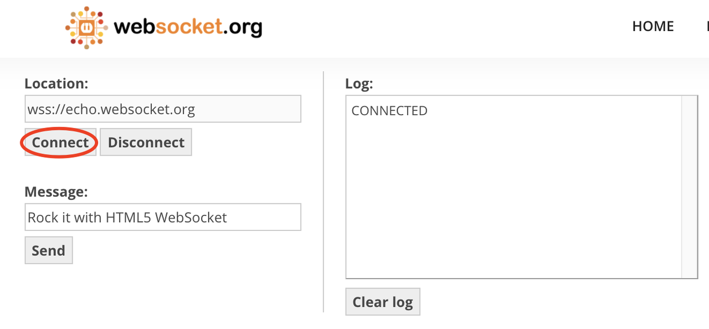
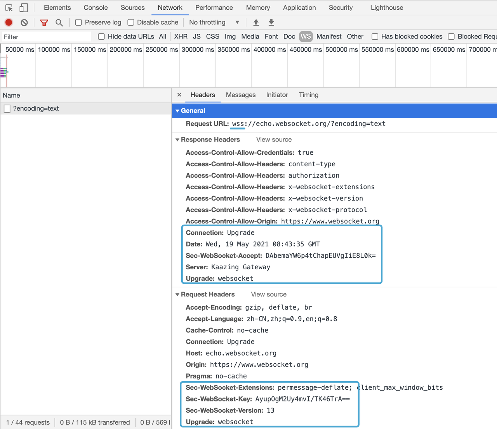
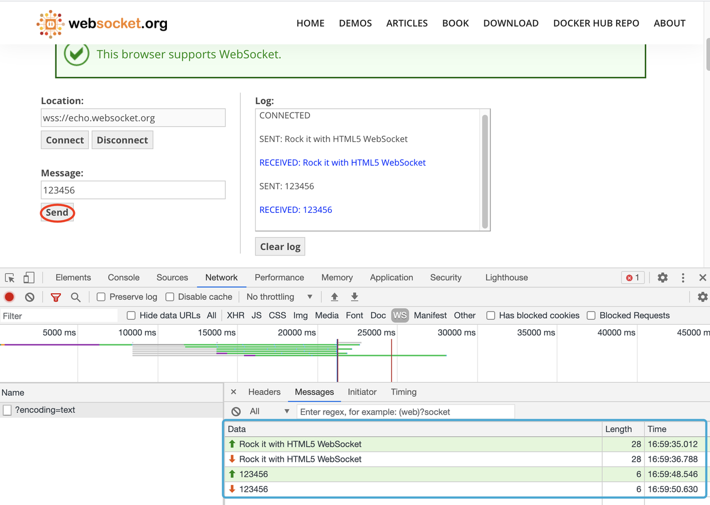

什么是WebSocket？
WebSocket是一种网络传输协议，可在单个TCP连接上进行全双工通信，位于OSI模型的应用层。WebSocket协议在2011年由IETF标准化为RFC 6455，后由RFC 7936补充规范。
WebSocket使得客户端和服务器之间的数据交换变得更加简单，允许服务端主动向客户端推送数据。在WebSocket API中，浏览器和服务器只需要完成一次握手，两者之间就可以创建持久性的连接，并进行双向数据传输。
有哪些优点？
- 较少的控制开销。在连接创建后，服务器和客户端之间交换数据时，用于协议控制的数据包头部相对较小。在不包含扩展的情况下，对于服务器到客户端的内容，此头部大小只有2至10字节（和数据包长度有关）；对于客户端到服务器的内容，此头部还需要加上额外的4字节的掩码。相对于HTTP请求每次都要携带完整的头部，此项开销显著减少了。
- 强的实时性。由于协议是全双工的，所以服务器可以随时主动给客户端下发数据。相对于HTTP请求需要等待客户端发起请求服务端才能响应，延迟明显更少；即使是和Comet等类似的长轮询比较，其也能在短时间内更多次地传递数据。
- 保持连接状态。与HTTP不同的是，Websocket需要先创建连接，这就使得其成为一种有状态的协议，之后通信时可以省略部分状态信息。而HTTP请求可能需要在每个请求都携带状态信息（如身份认证等）。
- 更好的二进制支持。Websocket定义了二进制帧，相对HTTP，可以更轻松地处理二进制内容。
- 可以支持扩展。Websocket定义了扩展，用户可以扩展协议、实现部分自定义的子协议。如部分浏览器支持压缩等。
握手协议
WebSocket是一种与HTTP不同的协议。两者都位于OSI模型的应用层，并且都依赖于传输层的TCP协议。 虽然它们不同，但是RFC 6455中规定：it is designed to work over HTTP ports 80 and 443 as well as to support HTTP proxies and intermediaries（WebSocket通过HTTP端口80和443进行工作，并支持HTTP代理和中介），从而使其与HTTP协议兼容。 为了实现兼容性，WebSocket握手使用HTTP Upgrade头从HTTP协议更改为WebSocket协议。
握手例子
一个典型的Websocket握手请求如下：
客户端请求：
1 | GET /chat HTTP/1.1 |
服务器回应：
1 | HTTP/1.1 101 Switching Protocols |
字段说明
- Connection必须设置Upgrade，表示客户端希望连接升级。
- Upgrade字段必须设置Websocket，表示希望升级到Websocket协议。
- Sec-WebSocket-Key是随机的字符串，服务器端会用这些数据来构造出一个SHA-1的信息摘要。把“Sec-WebSocket-Key”加上一个特殊字符串“258EAFA5-E914-47DA-95CA-C5AB0DC85B11”，然后计算SHA-1摘要，之后进行Base64编码，将结果做为“Sec-WebSocket-Accept”头的值，返回给客户端。如此操作，可以尽量避免普通HTTP请求被误认为Websocket协议。
- Sec-WebSocket-Version 表示支持的Websocket版本。RFC6455要求使用的版本是13，之前草案的版本均应当弃用。
- Origin字段是必须的。如果缺少origin字段，WebSocket服务器需要回复HTTP 403 状态码（禁止访问）。
体验一下

握手报文：

数据传输：

数据帧
WebSocket客户端、服务端通信的最小单位是帧（frame），由1个或多个帧组成一条完整的消息（message）。
- 发送端：将消息切割成多个帧，并发送给服务端；
- 接收端：接收消息帧，并将关联的帧重新组装成完整的消息；
帧结构
1 | +-+-+-+-+-------+-+-------------+-------------------------------+ |
字段说明
FIN：1个比特。
如果是1，表示这是消息（message）的最后一个分片（fragment），如果是0，表示不是是消息（message）的最后一个分片（fragment）。
RSV1, RSV2, RSV3：各占1个比特。
一般情况下全为0。当客户端、服务端协商采用WebSocket扩展时，这三个标志位可以非0，且值的含义由扩展进行定义。如果出现非零的值，且并没有采用WebSocket扩展，连接出错。
Opcode: 4个比特。
操作代码，Opcode的值决定了应该如何解析后续的数据载荷（data payload）。如果操作代码是不认识的，那么接收端应该断开连接（fail the connection）。可选的操作代码如下：
- %x0：表示一个延续帧。当Opcode为0时，表示本次数据传输采用了数据分片，当前收到的数据帧为其中一个数据分片。
- %x1：表示这是一个文本帧（frame）
- %x2：表示这是一个二进制帧（frame）
- %x3-7：保留的操作代码，用于后续定义的非控制帧。
- %x8：表示连接断开。
- %x9：表示这是一个ping操作。
- %xA：表示这是一个pong操作。
- %xB-F：保留的操作代码，用于后续定义的控制帧。
Mask: 1个比特。
表示是否要对数据载荷进行掩码操作。从客户端向服务端发送数据时，需要对数据进行掩码操作；从服务端向客户端发送数据时，不需要对数据进行掩码操作。
如果服务端接收到的数据没有进行过掩码操作，服务端需要断开连接。
如果Mask是1，那么在Masking-key中会定义一个掩码键（masking key），并用这个掩码键来对数据载荷进行反掩码。所有客户端发送到服务端的数据帧，Mask都是1。
掩码的算法、用途在下一小节讲解。
Payload length：数据载荷的长度，单位是字节。为7位，或7+16位，或1+64位。
假设数Payload length === x，如果
- x为0~126：数据的长度为x字节。
- x为126：后续2个字节代表一个16位的无符号整数，该无符号整数的值为数据的长度。
- x为127：后续8个字节代表一个64位的无符号整数（最高位为0），该无符号整数的值为数据的长度。
此外，如果payload length占用了多个字节的话，payload length的二进制表达采用网络序（big endian，重要的位在前）。
Masking-key：0或4字节（32位）
所有从客户端传送到服务端的数据帧，数据载荷都进行了掩码操作，Mask为1，且携带了4字节的Masking-key。如果Mask为0，则没有Masking-key。
备注：载荷数据的长度，不包括mask key的长度。
Payload data：(x+y) 字节
- 载荷数据：包括了扩展数据、应用数据。其中，扩展数据x字节，应用数据y字节。
- 扩展数据：如果没有协商使用扩展的话，扩展数据数据为0字节。所有的扩展都必须声明扩展数据的长度，或者可以如何计算出扩展数据的长度。此外，扩展如何使用必须在握手阶段就协商好。如果扩展数据存在，那么载荷数据长度必须将扩展数据的长度包含在内。
- 应用数据：任意的应用数据，在扩展数据之后（如果存在扩展数据），占据了数据帧剩余的位置。载荷数据长度 减去 扩展数据长度，就得到应用数据的长度。
掩码算法
掩码键（Masking-key）是由客户端挑选出来的32位的随机数。掩码操作不会影响数据载荷的长度。掩码、反掩码操作都采用如下算法：
首先，预设：
- original-octet-i：为原始数据的第i字节。
- transformed-octet-i：为转换后的数据的第i字节。
- j：为i mod 4的结果。
- masking-key-octet-j：为mask key第j字节。
流程为： original-octet-i 与 masking-key-octet-j 异或后，得到 transformed-octet-i。
伪代码大概是：
1 | var DECODED = ""; |
数据掩码的作用：
WebSocket 协议中，数据掩码的作用是增强协议的安全性。但数据掩码并不是为了保护数据本身，因为算法本身是公开的，运算也不复杂。除了加密通道本身，似乎没有太多有效的保护通信安全的办法。
那么为什么还要引入掩码计算呢，除了增加计算机器的运算量外似乎并没有太多的收益（这也是不少同学疑惑的点）。
答案还是两个字：安全。但并不是为了防止数据泄密，而是为了防止早期版本的协议中存在的代理缓存污染攻击（proxy cache poisoning attacks）等问题。
数据传递
一旦WebSocket客户端、服务端建立连接后，后续的操作都是基于数据帧的传递。
WebSocket根据opcode来区分操作的类型。比如0x8表示断开连接，0x0-0x2表示数据交互。
数据分片
WebSocket的每条消息可能被切分成多个数据帧。当WebSocket的接收方收到一个数据帧时，会根据FIN的值来判断，是否已经收到消息的最后一个数据帧。
FIN=1表示当前数据帧为消息的最后一个数据帧，此时接收方已经收到完整的消息，可以对消息进行处理。FIN=0，则接收方还需要继续监听接收其余的数据帧。
此外，opcode在数据交换的场景下，表示的是数据的类型。0x01表示文本，0x02表示二进制。而0x00比较特殊，表示延续帧（continuation frame），顾名思义，就是完整消息对应的数据帧还没接收完。
数据分片例子
下面例子来自MDN，可以很好地演示数据的分片。客户端向服务端两次发送消息，服务端收到消息后回应客户端，这里主要看客户端往服务端发送的消息。
第一条消息
FIN=1, 表示是当前消息的最后一个数据帧。服务端收到当前数据帧后，可以处理消息。opcode=0x1，表示客户端发送的是文本类型。
第二条消息
- FIN=0，opcode=0x1，表示发送的是文本类型，且消息还没发送完成，还有后续的数据帧。
- FIN=0，opcode=0x0，表示消息还没发送完成，还有后续的数据帧，当前的数据帧需要接在上一条数据帧之后。
- FIN=1，opcode=0x0，表示消息已经发送完成，没有后续的数据帧，当前的数据帧需要接在上一条数据帧之后。服务端可以将关联的数据帧组装成完整的消息。
1
2
3
4
5
6
7
8Client: FIN=1, opcode=0x1, msg="hello"
Server: (process complete message immediately) Hi.
Client: FIN=0, opcode=0x1, msg="and a"
Server: (listening, new message containing text started)
Client: FIN=0, opcode=0x0, msg="happy new"
Server: (listening, payload concatenated to previous message)
Client: FIN=1, opcode=0x0, msg="year!"
Server: (process complete message) Happy new year to you too!
心跳
WebSocket 为了保持客户端、服务端的实时双向通信，需要确保客户端、服务端之间的 TCP 通道保持连接没有断开。
对于长时间没有数据往来的连接，如果依旧长时间保持着，可能会浪费包括的连接资源。但不排除有些场景，客户端、服务端虽然长时间没有数据往来，但仍需要保持连接。这个时候，可以采用心跳来实现。
- 发送方 -> 接收方：ping
- 接收方 -> 发送方：pong
ping、pong 的操作，对应的是 WebSocket 的两个控制帧，opcode分别是0x9、0xA。
安全性
WebSocket协议中规定在连接建立时检查Upgrade请求中的某些字段（如Origin，查看每次请求是否一致），对于不符合要求的请求立即断开，在通信过程中，也对Frame中的控制位做了很多限制，以便禁止异常连接。
websocket协议中也规定了数据加密传输的方式，允许使用TLS/SSL来对通信加密，默认ws的端口为80，wss端口为433，类似HTTP与HTTPS。
Go实战：Gorilla WebSocket
文件监控例子（当文件被修改后，把文件发给客户端）：
1 | func main() { |
其中最重要的几个方法是Upgrade、ReadMessage和WriteMessage，下面逐一介绍。
Upgrade
协议升级
1 | // Upgrade upgrades the HTTP server connection to the WebSocket protocol. |
ReadMessage
1 | func (c *Conn) ReadMessage() (messageType int, p []byte, err error) { |
WriteMessage
1 | func (c *Conn) WriteMessage(messageType int, data []byte) error { |
Ref：